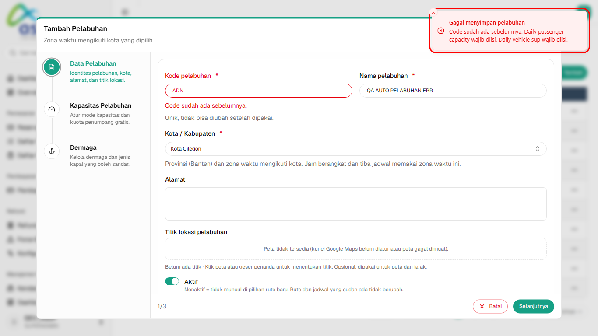

PL-T10 — Pesan error dari server memakai nama field Inggris ("Code", "Daily passenger capacity", "Daily vehicle sup") Langkah: 1. Buka menu Master data → Pelabuhan (/outlets) 2. Klik "Tambah" 3. Isi Kode "ADN" (sudah ada), Nama, Kota 4. Pilih mode "Pelabuhan 24 jam", kapasitas harian kosong 5. Simpan → konfirmasi Simpan Ekspektasi: Pesan memakai label di layar: "Kode pelabuhan sudah dipakai", "Kapasitas penumpang harian wajib diisi", "Kapasitas kendaraan harian (SUP) wajib diisi" Aktual: Toast: "Gagal menyimpan pelabuhan Code sudah ada sebelumnya. Daily passenger capacity wajib diisi. Daily vehicle sup wajib diisi."

[TEMUAN] PL-T10 — Pesan error dari server memakai nama field Inggris ("Code", "Daily passenger capacity", "Daily vehicle sup")
Langkah:
1. Buka menu Master data → Pelabuhan (/outlets)
2. Klik "Tambah"
3. Isi Kode "ADN" (sudah ada), Nama, Kota
4. Pilih mode "Pelabuhan 24 jam", kapasitas harian kosong
5. Simpan → konfirmasi Simpan
Ekspektasi: Pesan memakai label di layar: "Kode pelabuhan sudah dipakai", "Kapasitas penumpang harian wajib diisi", "Kapasitas kendaraan harian (SUP) wajib diisi"
Aktual: Toast: "Gagal menyimpan pelabuhan Code sudah ada sebelumnya. Daily passenger capacity wajib diisi. Daily vehicle sup wajib diisi."
(bukti: hasil\bukti\PL-T10_20261113-100209.png)Tidak ada test yang gagal.
Tidak ada gangguan koneksi.
Tidak ada.
| No | Berkas | Test | Jenis | Status | Detik |
|---|---|---|---|---|---|
| 1 | UI\pelabuhan-ubah.spec.ts | Pelabuhan — siklus data uji > [Positif] PL-30 Tambah pelabuhan (Per kapal + 1 dermaga) → muncul di daftar dengan zona waktu otomatis | PEMERIKSAAN | LULUS | 6.6 |
| 2 | UI\pelabuhan-ubah.spec.ts | Pelabuhan — siklus data uji > [Negatif] PL-31 kode yang sudah dipakai → ditolak "sudah ada", tidak ada data baru | PEMERIKSAAN | LULUS | 5.8 |
| 3 | UI\pelabuhan-ubah.spec.ts | Pelabuhan — siklus data uji > [Negatif] PL-32 mode Pelabuhan 24 jam tanpa kapasitas harian → gagal simpan | PEMERIKSAAN | LULUS | 5.8 |
| 4 | UI\pelabuhan-ubah.spec.ts | Pelabuhan — siklus data uji > [Positif] PL-33 Ubah nama → konfirmasi menampilkan perubahan lama → baru, daftar ikut berubah | PEMERIKSAAN | LULUS | 4.1 |
| 5 | UI\pelabuhan-ubah.spec.ts | Pelabuhan — siklus data uji > [Edge] PL-34 Ubah tanpa mengubah apa pun → tidak ada perubahan yang tersimpan | PEMERIKSAAN | LULUS | 4.0 |
| 6 | UI\pelabuhan-ubah.spec.ts | Pelabuhan — siklus data uji > [Positif] PL-35 Nonaktifkan → status "Tidak Aktif", menu berubah jadi "Aktifkan", muncul di filter Tidak Aktif | PEMERIKSAAN | LULUS | 3.8 |
| 7 | UI\pelabuhan-ubah.spec.ts | Pelabuhan — siklus data uji > [Negatif] PL-36 Aktifkan → Batal → status tetap "Tidak Aktif" | PEMERIKSAAN | LULUS | 2.4 |
| 8 | UI\pelabuhan-ubah.spec.ts | Pelabuhan — siklus data uji > [Positif] PL-37 Aktifkan kembali → status "Aktif" | PEMERIKSAAN | LULUS | 3.4 |
| 9 | UI\pelabuhan-ubah.spec.ts | Pelabuhan — siklus data uji > [Positif] PL-38 Hapus Data → hilang dari daftar, total berkurang 1 | PEMERIKSAAN | LULUS | 5.6 |
| 10 | UI\pelabuhan-ubah.spec.ts | Pelabuhan — siklus data uji > [Positif] PL-39 dampak: pelabuhan nonaktif tidak muncul di pilihan rute baru | PEMERIKSAAN | DILEWATI | 0.0 |
| 11 | UI\pelabuhan-ubah.spec.ts | Pelabuhan — siklus data uji > [Negatif] PL-40 pelabuhan yang dipakai jadwal aktif → Hapus ditolak | PEMERIKSAAN | DILEWATI | 0.0 |
| 12 | UI\pelabuhan-ubah.spec.ts | Pelabuhan — siklus data uji > [Temuan] PL-T10 pesan error simpan memakai nama field bahasa Inggris | PEMERIKSAAN | LULUS | 5.6 |
Pelabuhan — siklus data uji > [Positif] PL-39 dampak: pelabuhan nonaktif tidak muncul di pilihan rute baru: -
Pelabuhan — siklus data uji > [Negatif] PL-40 pelabuhan yang dipakai jadwal aktif → Hapus ditolak: -